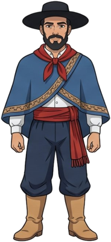
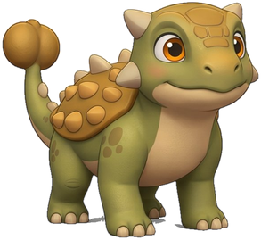
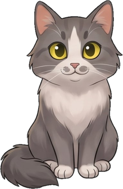

El gauchoJuan Moreira (1829-1874)
Gaucho bonaerense real, perseguido por la justicia de su tiempo tras un conflicto con las autoridades locales. Murió en Lobos en 1874, enfrentado a una partida policial. Eduardo Gutiérrez convirtió su vida en novela y los hermanos Podestá la llevaron al circo criollo, punto de partida del teatro rioplatense. Su figura encarna al gaucho marginado por un sistema que no lo reconocía: la lealtad, el coraje y la tradición de la pampa, con todas sus contradicciones.
La Madre de la PatriaMaría Remedios del Valle
Mujer afroargentina que en 1810 se sumó al Ejército del Norte junto a su marido y sus hijos, que murieron en campaña. Fue enfermera y combatiente: Belgrano la nombró capitana y los soldados la llamaron Madre de la Patria. Herida y capturada, logró escapar. Terminó sus días en la pobreza y el reconocimiento del Estado llegó tarde. Hoy, cada 8 de noviembre, el Día Nacional de los/as Afroargentinos/as y de la Cultura Afro honra su memoria.

AnkiMi dinosaurio favorito
El anquilosaurio vivió a fines del Cretácico, hace unos 68 a 66 millones de años, en lo que hoy es América del Norte. Era herbívoro y estaba cubierto por una armadura de placas óseas, con una cola terminada en una maza que usaba para defenderse. Podía medir entre 6 y 8 metros de largo. Es mi dinosaurio favorito, y en Quipu es el más tierno de la familia.
PachamamaLa madre tierra
En tiempos en que predominan modelos productivos que extraen los recursos naturales sin contemplar su tiempo de regeneración ni el impacto sobre el ambiente, la Pachamama nos propone otra mirada. Más allá de la cosmovisión andina de la que nace, lo valioso es lo que trae consigo: los valores de conservación, de cuidado y de respeto por la tierra que nos sostiene.

LunaMi gata
Luna es mi gata, compañera de casa y de paseos con su arnés de huellitas. Gris y blanca, de pelo largo y ojos amarillo verdosos, en Quipu representa la compañía de todos los días: esa presencia tranquila que está ahí mientras trabajás, estudiás o simplemente estás.
CompaEl dibujo de Cristian
Compa es un personaje especial por lo que representa. Nace de un dibujo que hizo Cristian en las tardes de dibujo que compartíamos. Darle vida en Quipu es otra pequeña forma de recordarlo y de que siga acompañando.